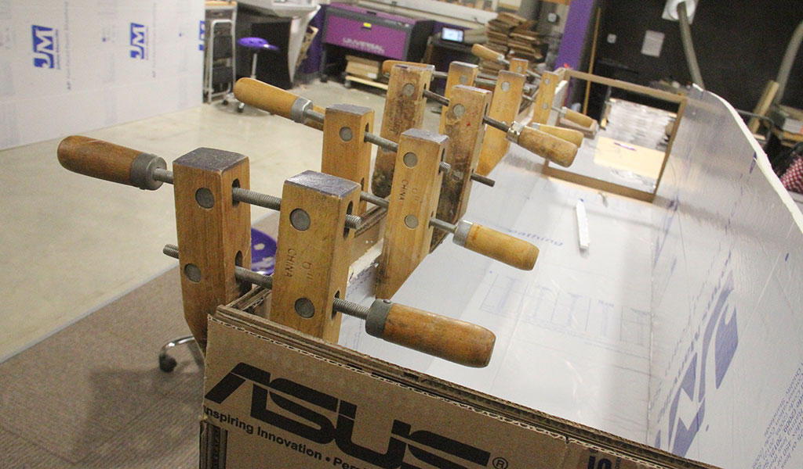
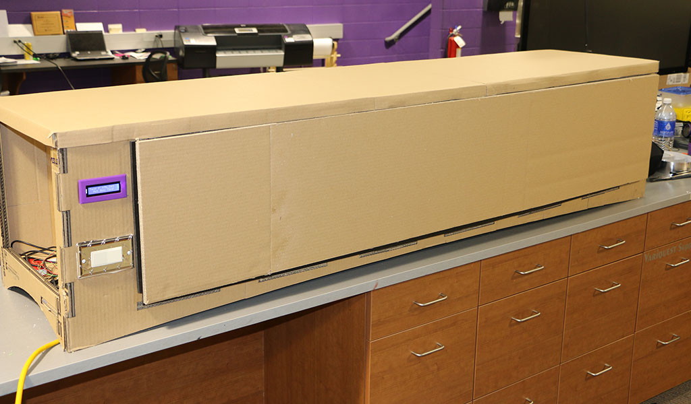
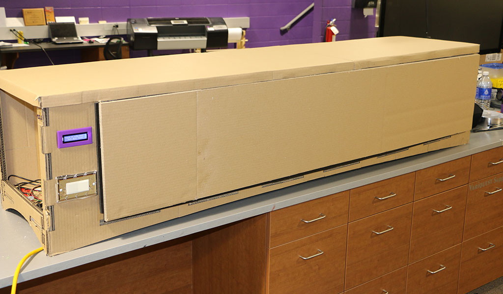

- What tasks have been completed/what tasks remain?
What has worked/what hasn't?
What questions need to be resolved?
What will happen when?
What have you learned?
Assignment 19
The Assignment for week Week 19 was to answer the following questions:
What tasks have been completed/What remains?
I took this week to finish buttoning up my final odds and ends. At this point I have completed the construction of the box, sealed and taped the insulation, written the code for the LM34 sensor and combined it with the code for the LCD screen that I ordered. I have the heating element and Jonson A419 controller wired up and working. All I have left is to located the electronics on the box, finalize the wiring and start testing.
laser cut parts for construction

building the box

 

Wiring up sensors and controls


LCD screen showing temp


What has worked/what hasn't?
For the most part the construction of the box went smoothly. I did run into a few hiccups. For instance the glueinig of the larger cardboard parts took a little longer due to the fact that I was trying to line up 5 parts per layer with 4 layers total. It tooks some adjusting but most of the box construction went very well. The electronics portion was fairly simple with the exception of the coding for the Temp Sensor and LCD screen. I was able to get the seperate coding for each device to work by themselves but I had to play around with the Arduino code a little more than I thought to get the screen to read out exactly what I wanted to. Coding was my weakest area from the onset of this course. Eventually I was able to get it though because there are a ton of resources on the web to help walk you through it. The last bit of testing lead me to a problem I had not anticipate. I have two temp sensors in the box - one is attached to the Johnson A419 and the other is the LM34. This was by design. The difficulty was trying to determine a good location for both of them. I wanted the A419 sensor located closer to the heat source/fan module so that it would read higher due to he warm air coming out of the fan. This would help me to prevent the heat source from running constantly during the preheat phase. Eventually as the box warmed up the A419 sensor would start to heat/cool slower due to the warming air around it. This also starts to diminish the amount of time the heat source is running the longer into the bake cycle. Finding the right location was tricky. The second issue was getting the LM34 to read accurately in terms of the actual box temp. Orginally I had it locate in the top of the box but decided to move it to the middle of the end wall. This seemed to take it out of the warm air flow artifically raising the read out temp.
LM34 Sensor Location
A419 Sensor on movable base
What questions need to be resolved?
At this point the main question I have revolves around what I need to do to tackle the communication to a personal device. I am getting the feeling from looking at other projects and listening to Neil that this might fall under a "future" undertaking type of scenario. We are getting short on time in our semester here in class and we are also busy here at my high school with the semester wrapping up as well as finishing our yearbook (I am the adviser). Most of the other bugs have been worked out of the project and it functions quite well.
What will happen when?
From here on out the last two weeks I will spend time making any last minute adjustments to the project. going over my website and making sure my documentation is up to date. I will also work on the required slide and 1 minute video for the final presentation on June 21st.
What have you learned?
Throughout the course of this final project and Fab Academy I have learned a TON of things. Most of them are in the areas of electronics and fabrication using the CNC mill, electronics production and software. I was very limited in my knowledge of these as they were new to our lab. I feel confident that I can at least find the information out on the web and bring it back into my lab and start to try and solve/create electronic related questions. The other area that I learned a bunch was in the process and personally. The most important thing I learned is that I have a qualified partner here at the Innovation Center that I can work with collaboratively to solve problems. We faced a unique situation here where our "local" instructor was 700 miles away in Detroit. Kayla and I spent quite a bit of time working through these assigments together to figure them out. This transferred to my final project as well. I had the confidence to plug away at the little tasks to make sure they ended up with completion of the final project. We will be working together teaching in our lab so it was awesome to go through this toghether. There was also quite a bit of learning on the project management side of the Academy. I think that I will take parts of what we learned for file sharing, version control and documentation and work it into my engineering classes to help them stay more organized as well. Who knows I might even explore patent if I get some free time down the road. At least I understand the process better for any items that come out of our lab.
This is StoneWork, a free, fully standards-compliant CSS template designed by TEMPLATED. The photos in this template are from Fotogrph. This free template is released under the Creative Commons Attribution license, so you're pretty much free to do whatever you want with it (even use it commercially) provided you give us credit for it. Have fun :)